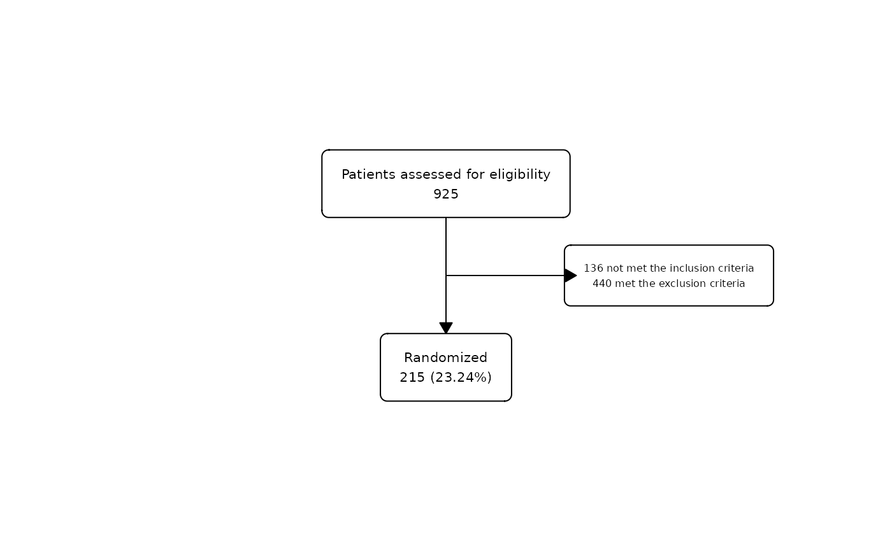

This function allows to modify the `.$fc` tibble included in each fc object that contains all the parameters of the flowchart.
Arguments
- object
flowchart created as a fc object.
- fun
A function or formula that will be applied to `.$fc`. If a _function_, it is used as is. If a _formula_, e.g. `fun = ~.x |> mutate(x = x + 0.2)`, it is converted to a function.
- ...
Additional arguments passed on to the mapped function.
Examples
#Example: let's modify the excluded box
text_exc <- paste0(
sum(safo$inclusion_crit == "Yes"),
" not met the inclusion criteria\n",
sum(safo$exclusion_crit == "Yes"),
" met the exclusion criteria"
)
safo |>
as_fc(label = "Patients assessed for eligibility") |>
fc_filter(!is.na(group), label = "Randomized", show_exc = TRUE) |>
fc_modify(
~ . |>
dplyr::mutate(
text = ifelse(id == 3, text_exc, text),
x = ifelse(id == 3, 0.75, x)
)
) |>
fc_draw()
